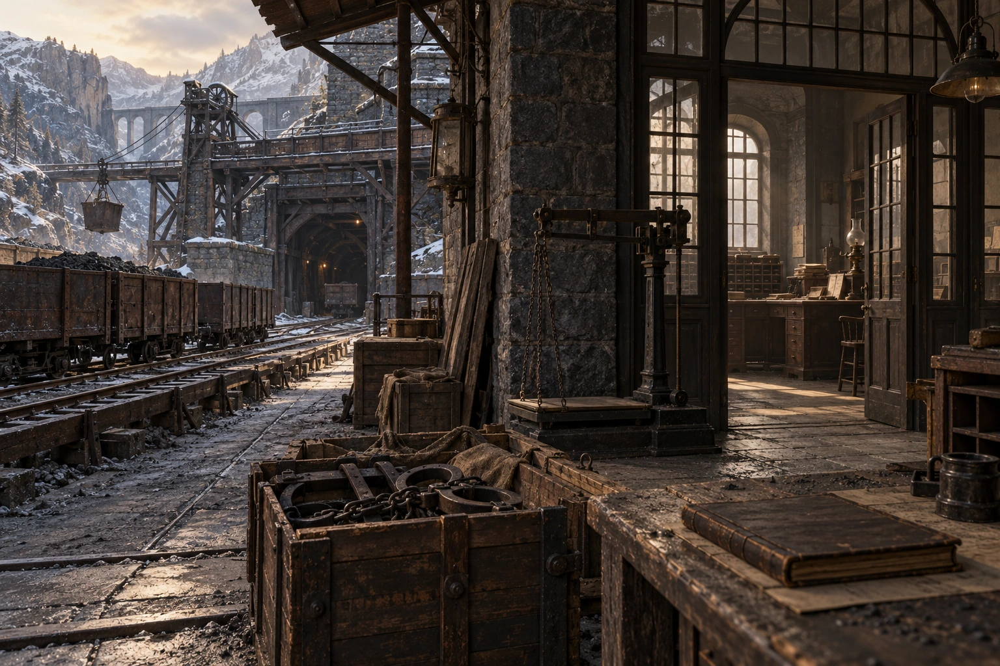

Funzionamento
Trasferire i prigionieri, installare vincoli individuali e addestrare una guardia di leva finanziata dal minerale.
Limiti
Chain V non rende schiava una persona senza un rapporto effettivamente raggiunto; nessun comando di Crown su tutto il pianeta.
Indizi
- Acquisti di ferri di custodia troppo numerosi per la cava dichiarata.
- Una persona fuggita sa il percorso fino alla stazione, non la residenza del capo.
Situazione al 18 maggio 812
Un convoglio di sei adulti è nascosto in una stazione dismessa. I vecchi marchi sono studiati, non già ripristinati su tutta una popolazione.
Obiettivi
Ricostituire un possesso ereditario della forza lavoro in tre gallerie, iniziando da prigionieri acquistati come debitori.
Verità e informazioni riservate
Voren usa un marchio recente imitativo: il fallimento locale non riattiva i marchi aboliti dal liberatore.
Responsabile
Membri
Operazioni e opposizioni
Operazione preparata
Trasferire i prigionieri, installare vincoli individuali e addestrare una guardia di leva finanziata dal minerale.
Bersagli
Comunità minerarie e oppositori della tratta; Edran è una figura storica detestata, Alexander non è identificato come lui.
Tracce e scoperta
Acquisti di ferri di custodia troppo numerosi per la cava dichiarata.
Una persona fuggita sa il percorso fino alla stazione, non la residenza del capo.
Possibilità di contrasto
Liberare i prigionieri, interrompere i vincoli con mezzi pertinenti, sottrarre entrate e custodi. La liberazione autentica resta valida.
Evoluzione indipendente
Il trasferimento può iniziare solo quando arriva la scorta e il tratto ferroviario è libero; i ritardi producono razionamento e possibilità di fuga.
Fratture interne
Ishra vuole il comando politico, non una famiglia di schiavi personale: accetta di perdere Voren pur di ereditare il sistema.
Patrocini e indipendenza
eredi politici delle Signorie; nessun mandato di tutti gli Ossari o Kethari
Figure coinvolte
- Voren Ashk — Chain 5
- Ishra Neth — Crown 3
- Manon Davren — Banner 2
- Ilian Arveil — Chain 2
- Benoit Alrun — Astrolabe 1
Archi narrativi
- The Shore Has a Name
- The Workshop Behind the Mark
- An Exit Kept Open
- Three Renewals
- The People Who Stayed
- A World That Can Leave
Responsabilità, compartimenti e operazione
Le informazioni sono ripartite fra responsabili e contatti locali; riferire il segreto della fazione non significa attribuirlo a ogni membro. I contatti elencati conservano lavoro, ubicazione e limiti propri. Un trasferimento richiede un messaggio o un viaggio reale.
Persone e conoscenze
Voren Ashk
Voren non visse la liberazione e non ha memorie di un’epoca in cui il suo diritto fosse naturale. Ricostruisce un modello dai registri e seleziona i passaggi che trasformano il controllo in eredità. Desidera ammirazione dai finanziatori e teme il ridicolo di una macchina coercitiva che non regge alla prima fuga. Conserva miniature delle gallerie e le mostra come un architetto, lasciando fuori chi vi lavora.
Conosce il carattere imitativo dei marchi recenti. Non può riattivare i vincoli aboliti su interi popoli né identificare Alexander come Edran senza apprendimento.
Ishra Neth
Ishra ottenne potere tenendo un controllo durante una carestia e ne fece un diritto permanente. Non vuole essere soltanto il braccio di Voren: vuole decidere chi transita e chi paga. Sa offrire cibo a un subordinato e ordinarne la punizione, senza vedere la contraddizione come una menzogna.
Conosce i controlli che dirige e le limitazioni pratiche del convoglio. Non acquisisce tutta la ricerca sui marchi perché partecipa allo stesso fronte.
Operazione, prova e risposta
Trasferire i prigionieri, installare vincoli individuali e addestrare una guardia di leva finanziata dal minerale.
- Acquisti di ferri di custodia troppo numerosi per la cava dichiarata.
- Una persona fuggita sa il percorso fino alla stazione, non la residenza del capo.
Liberare i prigionieri, interrompere i vincoli con mezzi pertinenti, sottrarre entrate e custodi. La liberazione autentica resta valida.
Risorse e divisioni
Chain V non rende schiava una persona senza un rapporto effettivamente raggiunto; nessun comando di Crown su tutto il pianeta.
Ishra vuole il comando politico, non una famiglia di schiavi personale: accetta di perdere Voren pur di ereditare il sistema.
Il trasferimento può iniziare solo quando arriva la scorta e il tratto ferroviario è libero; i ritardi producono razionamento e possibilità di fuga.